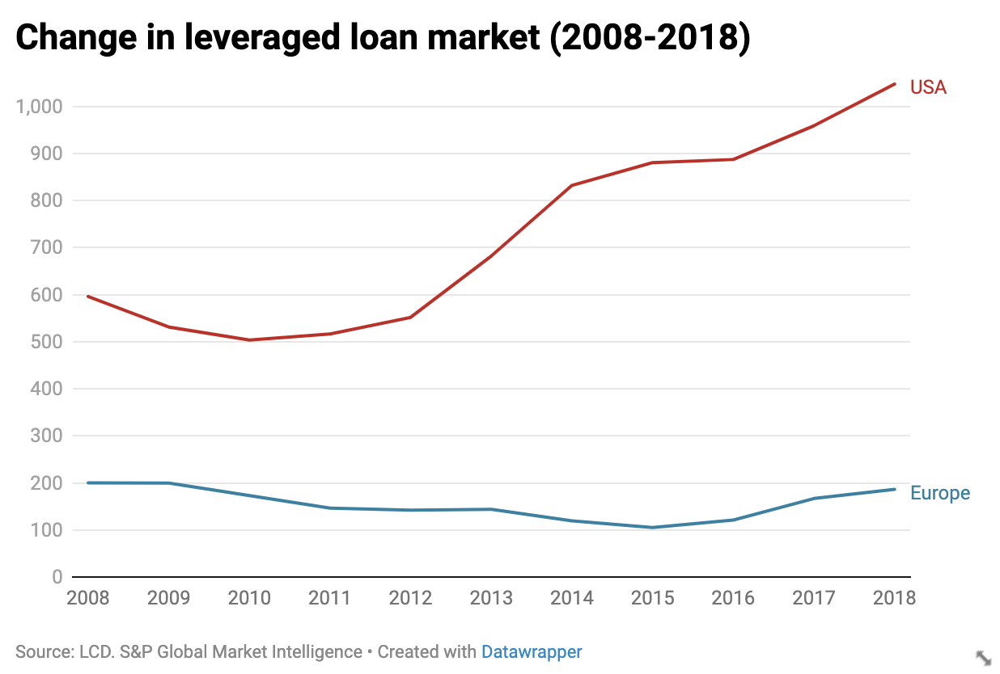

This data visualization is bad as:
- There is no reason/justification for why circles are used to represent the values
- It is hard for people to compare areas of circles
- As the circles got bigger in US' chart, they begin to overlap which can interfere with reading it
This data visualization is bad as:
- Length of bars is misleading (Length is based on their position instead of points)
- Difficult to compare points change between the two years
- Graph is very busy - A lot of unnecessary ink
This data visualization is bad as:
- It is hard to identify the order of the teams other than the first
- Sections are unordered
- Only shows proportion from total kills

This data visualization is better as:
- A trend over time can be easily seen
- The difference between USA or Europe is easily identifiable and compared
This data visualization is better as:
- Comparison between the two years are clearer
- Length of bar corresponds to number of points earned
- Despite not having the rankings, the difference in points allows for it to be clear
This data visualization is better as:
- Data is ordered so it is easy to identify their rank/order
- Able to see raw value of kills per team instead of the proportion against the total number of kills made